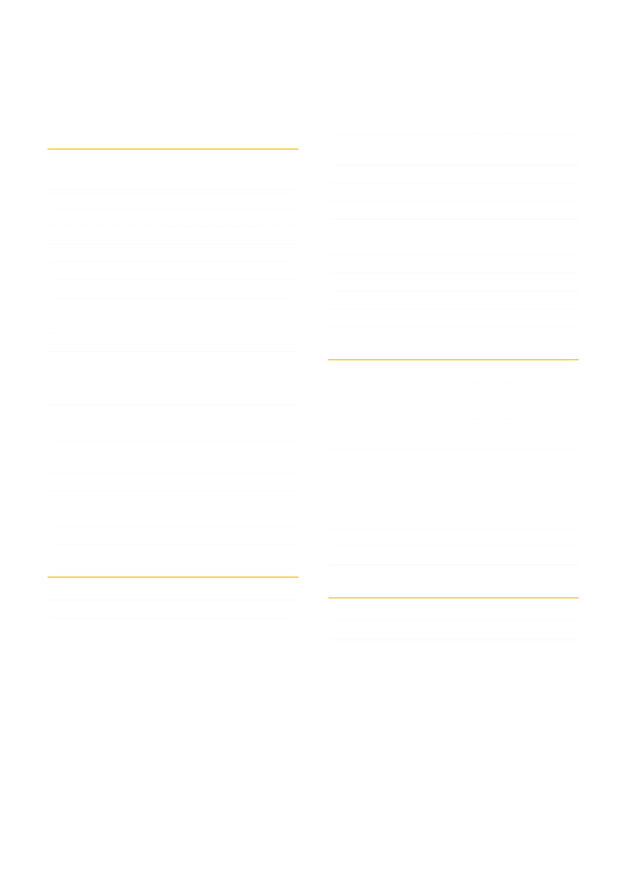

GENERAL BEEKEEPING
In this collection
ARTICLES AND GUIDES
3
Bee Swarm Collection and Removal
4
6
7
10
Victorian Apiarists' Association
11
Geelong Beekeepers Club
12
13
14
Hive components: approximate costs
16
17
John Edmonds
18
21
Deb Smith
22
Gary Montgomery
24
29
National Bee Unit (UK)
32
National Bee Unit (UK)
33
Total Fire Ban Days: use of smokers
38
What to do when you are Queenless
39
42
VIDEOS
Jurg Schutz
45
46
47
What is honey bee biosecurity?
48
National Bee Biosecurity Program and Code of
49
National Bee Pest Surveillance
50
Alcohol wash test for varroa mite
51
Sugar shake test for mites (Ag NSW)
52
Sugar shake test for mites (Ag Vic)
53
Drone uncapping test for varroa mite
54
55
56
Small hive beetle trap / attractant
57
Small hive beetle control devices
58
LONGER DOCUMENTS
Plan Bee: Honey Bee Breeding Manual
59
60
61
Australian Honey Bee Industry Biosecurity Code of
62
Australian Honey Bee Industry Biosecurity Manual
63
Thomas D. Seeley
64
Bee Friendly: a planting guide for
European honeybees and Australian
Mark Leech
65
C. C. Miller
66
67
ALSO
Varroa Management Hub — on the club website
›
Bee biology — in the club newsletter
›
Geelong Beekeepers Club ∙ General Beekeeping
2